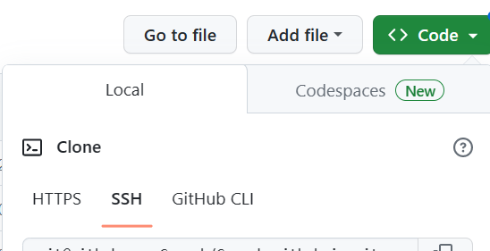
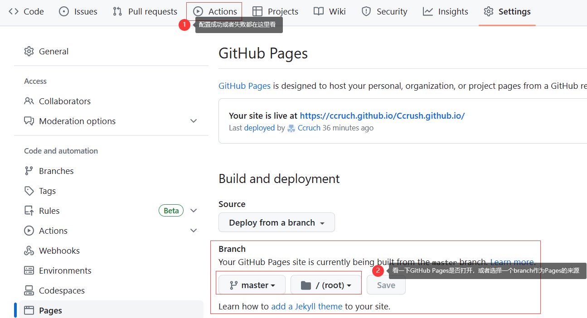
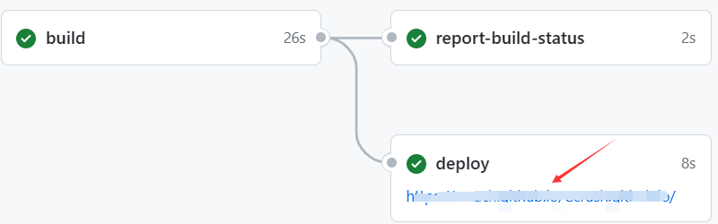
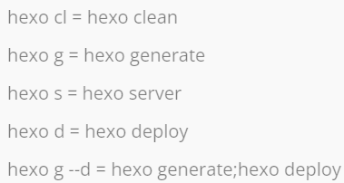

hexo博客搭建
搭建个人博客
参考：
hexo史上最全搭建教程_zjufangzh的博客-CSDN博客
一路照做直到第6步出问题
遇到的问题和解决方法：
生成的id_rsa.pub没有可以读取内容的软件
不用下载软件，在文件所在的文件夹用cmd，“more id_rsa.pub”
第6步中_config.yml的修改
可以用vscode修改
hexo deploy时SSH拒绝连接之类的
deploy:中的repo:可以修改为自己仓库的SSH链接
部署失败，甚至github的注册邮箱收到失败提示
查看报错信息，可以直接点开报错的邮件里面的链接，也可以直接打开github上面的仓库，找到Actions，里面就是deploy的过程。如果标红，说明是出错了。
如果错误是Jekyll啥的，到仓库的设置里面看一下github的Pages到底打开没。部署成功之后怎么找自己的github Pages
到仓库的Actions里面，如果绿色说明这次的部署成功了，点进去看详细信息

便捷指令

Pages不渲染(hexo s之后可以看到是成功时)
参考：
hexo+Github搭建博客，能访问但无法加载css文件_StarryaSky的博客-CSDN博客
注意：_config.yml中的url要改成github的仓库地址，加一个root字段，具体写什么按参考链接里面的做法找，应该是主页的仓库名称，也就是/username.github.io(注意前面有个斜杆/)
添加分类和标签
参考：
添加图片
参考：
Hexo博客插入本地图片、Markdown图片设置图片位置和大小_hexo图片大小_乐悠刘海儿的博客-CSDN博客
代码放在一行？我放在一行才行。
更新时没变化
多试几次，如果hexo d命令之后没有出现“e8666d2..aab2c9d HEAD -> master”这样的字眼，说明没有push到github上面，随便修改一下文件，它检测有变化会push；
或者去仓库的Actions看有没有新的workflow(一般将近一分钟才部署成功)，如果没有新的workflow，不管怎么刷新都不会有变化的。